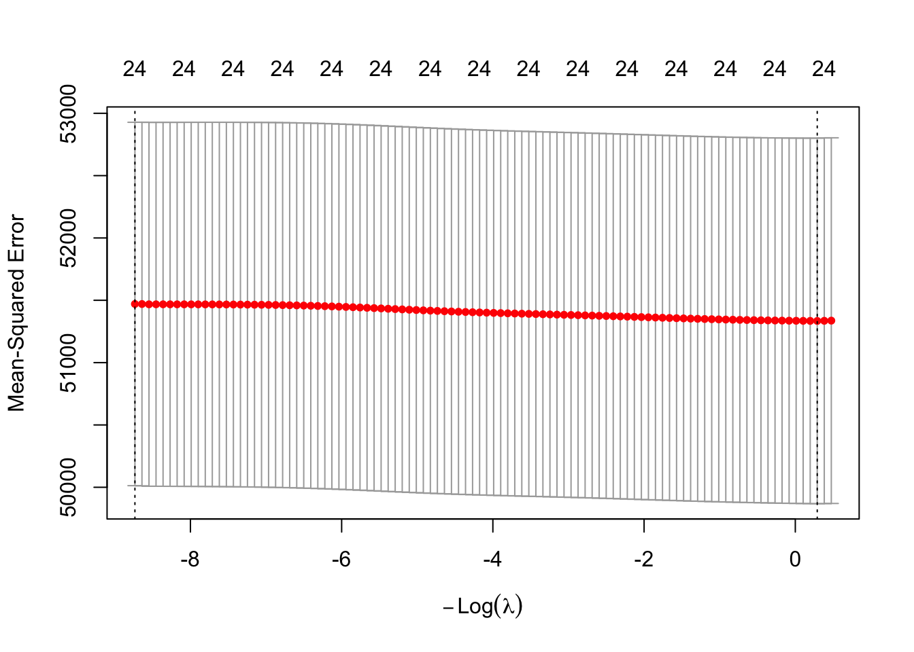
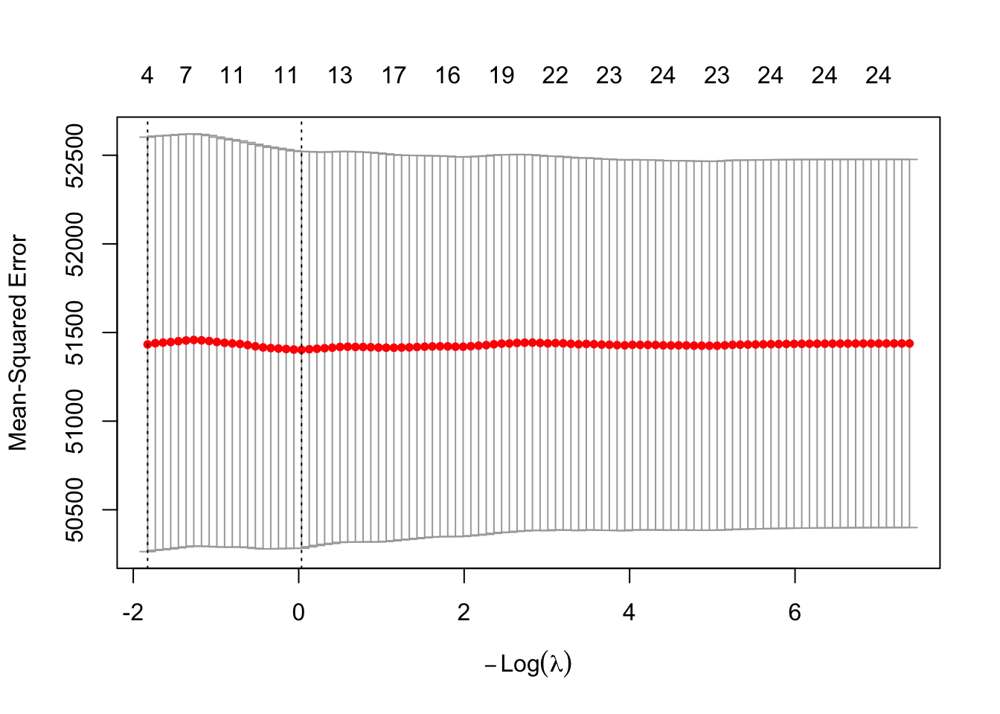
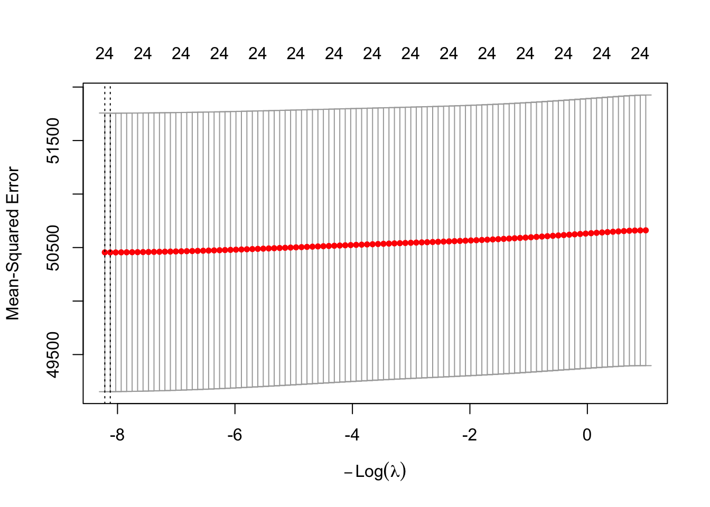
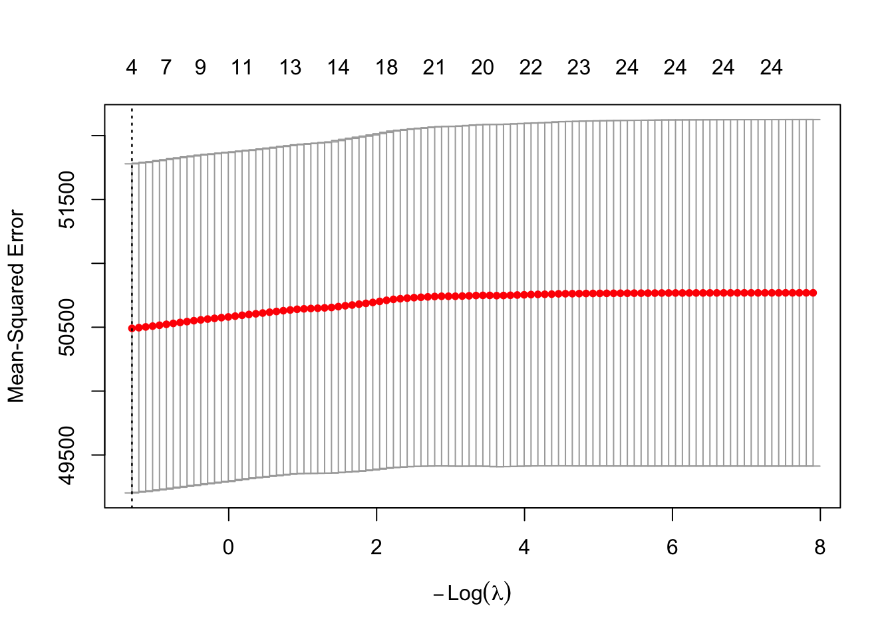

# Date: 07/21/2026
# Course : DS 6021 - Machine Learning I - Introduction to Predictive Modeling
# Module 9 Homework
# install.packages("NHANES")
# install.packages("rms")
# install.packages("dplyr")
# install.packages("glmnet")
# install.packages("plotly")
# install.packages("knitr")
# install.packages("Hmisc")
#install.packages("webshot2")
#webshot2::install_phantomjs()
library(NHANES)
library(rms)Loading required package: Hmisc
Attaching package: 'Hmisc'The following objects are masked from 'package:base':
format.pval, unitslibrary(dplyr)
Attaching package: 'dplyr'The following objects are masked from 'package:Hmisc':
src, summarizeThe following objects are masked from 'package:stats':
filter, lagThe following objects are masked from 'package:base':
intersect, setdiff, setequal, unionlibrary(glmnet)Loading required package: MatrixLoaded glmnet 5.0library(plotly)Loading required package: ggplot2
Attaching package: 'plotly'The following object is masked from 'package:ggplot2':
last_plotThe following object is masked from 'package:Hmisc':
subplotThe following object is masked from 'package:stats':
filterThe following object is masked from 'package:graphics':
layoutlibrary(knitr)
library(Hmisc)
knitr::opts_chunk$set(results = "hide", message = FALSE, warning = FALSE)
# Task 1. Pick a dataset with a continuous outcome, a continuous predictor, and a multi-level categorical grouping variable (NHANES with a different outcome/predictor pair than used in this chapter is fine, as is an outside dataset). Fit the full/partial/no-sharing ladder from this chapter (fully shared, shared-shape offset, full interaction, fully separate) and report which point on the spectrum the data support using cross-validated MSE.
options(prType = "html")
data(NHANES)
# selecting columns for a continuous outcome, a continuous predictor, and a multi-level categorical grouping variable for the nhanes data
# continuous outcome: Testosterone
# continuous predictor(s): BMI, Age
# categorical grouping variable: HealthGen
nhanes_new_data <- NHANES |>
select(Testosterone, HealthGen, BMI, Age) |>
na.omit() |>
as.data.frame()
# Making sure HealthGen is a factor
nhanes_new_data$HealthGen <- factor(nhanes_new_data$HealthGen)
# Remove unused factor levels
nhanes_new_data$HealthGen <- droplevels(nhanes_new_data$HealthGen)
# Creating a datadist object
new_dd_nhanes <- datadist(nhanes_new_data)
options(datadist = "new_dd_nhanes")
# all columns in the nhanes_new_data data set
nhanes_new_data_HealthGen_Status <- nhanes_new_data$HealthGen
nhanes_new_data_BMI <- nhanes_new_data$BMI
nhanes_new_data_Testosterone <- nhanes_new_data$Testosterone
# Fit the full/partial/no-sharing ladder from this chapter (fully shared, shared-shape offset, full interaction, fully separate)
# number of knots or splines
bmi_knots <- attr(rcs(nhanes_new_data_BMI, 5), "parms")
# fully shared
fit_model_fully_shared <- ols(Testosterone ~ rcs(BMI, bmi_knots), data = nhanes_new_data, x = TRUE, y = TRUE)
# Partial sharing: shared-shape offset and shifted
fit_model_partial_shared <- ols(Testosterone ~ rcs(BMI, bmi_knots) + HealthGen, data = nhanes_new_data, x = TRUE, y = TRUE)
# full interaction
fit_model_full_interaction <- ols(Testosterone ~ rcs(BMI, bmi_knots) * HealthGen, data = nhanes_new_data, x = TRUE, y = TRUE)
# fully separate (kept your original style of names)
fitted_model_healthGen_Excellent_separate <- ols(Testosterone ~ rcs(BMI, bmi_knots), data = nhanes_new_data |> filter(HealthGen == "Excellent"))
fitted_model_healthGen_Vgood_separate <- ols(Testosterone ~ rcs(BMI, bmi_knots),data = nhanes_new_data |> filter(HealthGen == "Vgood"))
fitted_model_healthGen_Good_separate <- ols(Testosterone ~ rcs(BMI, bmi_knots), data = nhanes_new_data |> filter(HealthGen == "Good"))
fitted_model_healthGen_Fair_separate <- ols(Testosterone ~ rcs(BMI, bmi_knots), data = nhanes_new_data |> filter(HealthGen == "Fair"))
fitted_model_healthGen_Poor_separate <- ols(Testosterone ~ rcs(BMI, bmi_knots), data = nhanes_new_data |> filter(HealthGen == "Poor"))
# Report which point on the spectrum the data support using cross-validated MSE.
# CV-MSE for all models
# setting the seed for reproducibility of results
set.seed(42)
# k values for cross-validation
k_val <- 10
# total number of rows or cases in the nhanes_new_data data set
total_num_of_new_data_nhanes <- nrow(nhanes_new_data)
# k-fold cross-validation vector
k_fold_id <- sample(rep(1:k_val, length.out = total_num_of_new_data_nhanes))
# Create empty vectors to store CV-MSE for each model
cv_mse_full_shared <- rep(NA, k_val)
cv_mse_partial_shared <- rep(NA, k_val)
cv_mse_full_interaction <- rep(NA, k_val)
cv_mse_fully_separate <- rep(NA, k_val)
# creating other empty vectors for Group-specific fully-separate MSEs
cv_mse_Excellent <- rep(NA, k_val)
cv_mse_Vgood <- rep(NA, k_val)
cv_mse_Good <- rep(NA, k_val)
cv_mse_Fair <- rep(NA, k_val)
cv_mse_Poor <- rep(NA, k_val)
# looping through the k values
for (k in 1:k_val) {
# setting training and test data based on the k value
train <- nhanes_new_data[k_fold_id != k, ]
test <- nhanes_new_data[k_fold_id == k, ]
# Fully shared and calculating the cv mse
fit_full_shared_new <- ols(Testosterone ~ rcs(BMI, 5), data = train)
cv_mse_full_shared[k] <- mean((predict(fit_full_shared_new, test) - test$Testosterone)^2, na.rm = TRUE)
# Partial sharing (shared-shape offset) and calculating the cv mse
fit_partial_shared_new <- ols(Testosterone ~ rcs(BMI, 5) + HealthGen, data = train)
cv_mse_partial_shared[k] <- mean((predict(fit_partial_shared_new, test) - test$Testosterone)^2, na.rm = TRUE)
# Full interaction and calculating the cv mse
fit_full_interaction_new <- ols(Testosterone ~ rcs(BMI, 5) * HealthGen, data = train)
cv_mse_full_interaction[k] <- mean((predict(fit_full_interaction_new, test) - test$Testosterone)^2, na.rm = TRUE)
# Creating a vector to store predictions of all groups
pred_separate_per_group <- rep(NA, nrow(test))
# Fit one model per HealthGen group on the training data
# looping through each level of the HealthGen status groups
for (health_status_level in levels(train$HealthGen)) {
# pulling out the training data at the certain HealthGen Status level
train_data_health_status_group <- train[train$HealthGen == health_status_level, ]
# pulling out the index of the data of that health status
test_index <- which(test$HealthGen == health_status_level)
# Skip the row in the new data if there no test observations indexes/values or too few training observations
if (length(test_index) == 0 || nrow(train_data_health_status_group) < 15) {
next
} else {
# fitting the model for each healthgen status group with the predictions of Testosterone via the restricted cubic splines of BMI at k = 5 from the training data
fitted_model_healthGen_separate_groups <- ols(Testosterone ~ rcs(BMI, 5), data = train_data_health_status_group)
# pulling out the predictions from the model for each row of the test data
predictions_for_healthGen_groups <- predict(fitted_model_healthGen_separate_groups, test[test_index, ])
# placing the predictions in the pred_separate_per_group vector
pred_separate_per_group[test_index] <- predictions_for_healthGen_groups
# Calculating all of the group-specific MSE
group_mses <- mean((predictions_for_healthGen_groups - test$Testosterone[test_index])^2, na.rm = TRUE)
# placing the group-specific MSE of the Excellent group of the HealthGen status groups into the cv_mse_Excellent vector
if (health_status_level == "Excellent")
cv_mse_Excellent[k] <- group_mses
# placing the group-specific MSE of the Vgood group of the HealthGen status groups into the cv_mse_Vgood vector
else if (health_status_level == "Vgood")
cv_mse_Vgood[k] <- group_mses
# placing the group-specific MSE of the Good group of the HealthGen status groups into the cv_mse_Good vector
else if (health_status_level == "Good")
cv_mse_Good[k] <- group_mses
# placing the group-specific MSE of the Fair group of the HealthGen status groups into the cv_mse_Fair vector
else if (health_status_level == "Fair")
cv_mse_Fair[k] <- group_mses
# placing the group-specific MSE of the Poor group of the HealthGen status groups into the cv_mse_Poor vector
else if (health_status_level == "Poor")
cv_mse_Poor[k] <- group_mses
# Skipping the row in the new data the level of the HealthGen status groups does not exist in all of the specified levels of the HealthGen status groups
next
}
}
# calculating the total cv mse of all of the prediction values of all of the separated groups of the HealthGen status groups
cv_mse_fully_separate[k] <- mean((pred_separate_per_group - test$Testosterone)^2, na.rm = TRUE)
}
# Create a dataframe to store the CV-MSE for each model
cv_mses_all_models <- data.frame(
Model = c("Fully Shared",
"Partially Shared (Offset)",
"Full Interaction",
"Fully Separate"),
CV_MSE = c(mean(cv_mse_full_shared, na.rm = TRUE),
mean(cv_mse_partial_shared, na.rm = TRUE),
mean(cv_mse_full_interaction, na.rm = TRUE),
mean(cv_mse_fully_separate, na.rm = TRUE))
)
# Specifying the digits and caption in the table
kable(cv_mses_all_models, digits = 2,
caption = "10-fold Cross-Validated MSE – Information Sharing Ladder")| Model | CV_MSE |
|---|---|
| Fully Shared | 50509.47 |
| Partially Shared (Offset) | 50597.78 |
| Full Interaction | 50807.34 |
| Fully Separate | 50796.37 |
# Creating a HealthGen status separate groups dataframe
separate_group_results <- data.frame(
HealthGen = c("Excellent", "Vgood", "Good", "Fair", "Poor"),
CV_MSE = c(mean(cv_mse_Excellent, na.rm = TRUE),
mean(cv_mse_Vgood, na.rm = TRUE),
mean(cv_mse_Good, na.rm = TRUE),
mean(cv_mse_Fair, na.rm = TRUE),
mean(cv_mse_Poor, na.rm = TRUE))
)
# Specifying the digits and caption in the table
kable(separate_group_results, digits = 1,
caption = "Fully Separate CV-MSE by HealthGen Group")| HealthGen | CV_MSE |
|---|---|
| Excellent | 54367.0 |
| Vgood | 56029.3 |
| Good | 46711.3 |
| Fair | 43892.4 |
| Poor | 52291.0 |
# Force the CV_MSE column to be numeric to allow future MSE calculations
cv_mses_all_models$CV_MSE <- as.numeric(cv_mses_all_models$CV_MSE)
# Extract the Fully Separate row
fully_sep_row <- cv_mses_all_models[cv_mses_all_models$Model == "Fully Shared", ]
# Extracting the row for the separate HealthGen group with the lowest CV_MSE
separate_group_mse <- separate_group_results[separate_group_results$CV_MSE == min(separate_group_results$CV_MSE), ]
# Printing out of the CV-MSE values for all models (separate model too, just not each individual isolated groups of the HealthGen status groups)
cat("\nExact CV-MSE values:\n")
Exact CV-MSE values:print(cv_mses_all_models) Model CV_MSE
1 Fully Shared 50509.47
2 Partially Shared (Offset) 50597.78
3 Full Interaction 50807.34
4 Fully Separate 50796.37# Printing out of the CV-MSE values for each HealthGen group
cat("\nExact CV-MSE values for each separate group:\n")
Exact CV-MSE values for each separate group:print(separate_group_results) HealthGen CV_MSE
1 Excellent 54367.05
2 Vgood 56029.35
3 Good 46711.31
4 Fair 43892.44
5 Poor 52291.01cat("\n\n")# printing out the minimum CV-MSE value for the fully separate model
cat("\n Overall Fully Separate CV-MSE: ",
fully_sep_row$Model,
"(", round(fully_sep_row$CV_MSE, 2), ")\n")
Overall Fully Separate CV-MSE: Fully Shared ( 50509.47 )# printing out the minimum CV-MSE value for each of the separate HealthGen groups
cat("\n Best individual HealthGen group:",
separate_group_mse$HealthGen,
"(", round(separate_group_mse$CV_MSE, 2), ")\n\n")
Best individual HealthGen group: Fair ( 43892.44 )# Task 2. Fit a group-specific response surface: two continuous predictors, additive-in-group vs. interactive-in-group (rcs(x1,4)*rcs(x2,4) + group vs. rcs(x1,4)*rcs(x2,4 * group).
# Compare CV-MSE between the two, and produce at least one plotly surface per group for the interactive model.
# Creating a new datadist object for group-specific response surfaces with two continuous predictor variables. Creating a new datadist object for group-specific response surfaces with two continuous predictor variables
new_dd_nhanes_new <- datadist(nhanes_new_data)
options(datadist = "new_dd_nhanes_new")
# New 10-fold CV-MSE comparison for the additive-in-group and interactive-in-group models
# Setting the seed for reproducibility
set.seed(50)
# k values for cross-validation
k_val_new <- 10
# generating random k values for cross-validation in a vector for the length of the nhanes_new_data
k_fold_id_new <- sample(rep(1:k_val_new, length.out = nrow(nhanes_new_data)))
# Create empty vectors to store CV-MSE for each model
cv_mse_additive <- rep(NA, k_val_new)
cv_mse_interactive <- rep(NA, k_val_new)
# looping through the k values 1-10
for (k in 1:k_val_new) {
# Splitting the data into training and test sets
train <- nhanes_new_data[k_fold_id_new != k, ]
test <- nhanes_new_data[k_fold_id_new == k, ]
# Fitting the additive-in-group model (4 knots)
fitted_model_additive_in_group <- ols(Testosterone ~ rcs(BMI, 4) * rcs(Age, 4) + HealthGen, data = train, x = TRUE, y = TRUE)
# Predictions and MSE for the additive model
predictions_additive_group <- predict(fitted_model_additive_in_group, newdata = test)
cv_mse_additive[k] <- mean((predictions_additive_group - test$Testosterone)^2, na.rm = TRUE)
# Additive-in-group model predictions and MSE added safety to avoid infinite or NaN predictions safeguards to skip any k fold value if any HealthGen group is too small (prevents singular matrix)
tab <- table(train$HealthGen)
if (any(tab < 25)) {
cv_mse_interactive[k] <- NA
next
}
# Try to fit the interactive model (4 knots); catch errors
fitted_model_fully_interactive_in_group <- tryCatch(
ols(Testosterone ~ rcs(BMI, 4) * rcs(Age, 4) * HealthGen,
data = train, x = TRUE, y = TRUE),
error = function(e) NULL
)
if (is.null(fitted_model_fully_interactive_in_group)) {
cv_mse_interactive[k] <- NA
next
}
# Predictions for the interactive model
predictions_interactive_group <- predict(fitted_model_fully_interactive_in_group, newdata = test)
# Extra safety: discard fold if any prediction is infinite or NaN
if (any(!is.finite(predictions_interactive_group))) {
cv_mse_interactive[k] <- NA
} else {
cv_mse_interactive[k] <- mean((predictions_interactive_group - test$Testosterone)^2, na.rm = TRUE)
}
}
# Printing out CV-MSe values of Additive-in-group (shared surface + offsets)" and "Fully interactive-in-group" models
cat("\nFold-specific additive CV-MSE:\n")
Fold-specific additive CV-MSE:print(cv_mse_additive) [1] 47899.02 49851.25 51999.55 44812.20 46543.05 53291.65 61064.53 48644.64
[9] 50245.22 46074.54cat("\nFold-specific interactive CV-MSE:\n")
Fold-specific interactive CV-MSE:print(cv_mse_interactive) [1] 583346.05 50597.29 51281.31 44509.59 46411.69 52574.09 62286.23
[8] 49334.00 52555.49 45822.86cv_surface_area <- data.frame(
Model = c("Additive-in-group (shared surface + offsets)",
"Fully interactive-in-group"),
CV_MSE = c(round(mean(cv_mse_additive, na.rm = TRUE), 2),
round(mean(cv_mse_interactive, na.rm = TRUE), 2))
)
kable(cv_surface_area, digits = 2,
caption = "10-fold CV-MSE for the Additive vs Interactive Response Surface Areas")| Model | CV_MSE |
|---|---|
| Additive-in-group (shared surface + offsets) | 50042.56 |
| Fully interactive-in-group | 103871.86 |
# Printing out of the CV-MSE values for the additive-in-group and interactive-in-group models
cat("\nExact 10-fold CV-MSE values from the additive-in-group and interactive-in-group models:\n")
Exact 10-fold CV-MSE values from the additive-in-group and interactive-in-group models:print(cv_surface_area) Model CV_MSE
1 Additive-in-group (shared surface + offsets) 50042.56
2 Fully interactive-in-group 103871.86cat("\nBoth CV-MSE's for the additive-in-group and interactive-in-group models: \n")
Both CV-MSE's for the additive-in-group and interactive-in-group models: cat("Additive-in-group: " , round(mean(cv_mse_additive, na.rm = TRUE), 2), "\n")Additive-in-group: 50042.56 cat("Interactive-in-group: " , round(mean(cv_mse_interactive, na.rm = TRUE), 2), "\n\n")Interactive-in-group: 103871.9 # Produce at least one plotly surface per group for the interactive model.
final_interactive_plotly_model <- ols(Testosterone ~ rcs(BMI, 4) * rcs(Age, 4) * HealthGen,
data = nhanes_new_data, x = TRUE, y = TRUE
)
# creating grids for the x, y, and z axis
# x-axis: BMI
bmi_grid <- seq(
min(nhanes_new_data$BMI, na.rm = TRUE),
max(nhanes_new_data$BMI, na.rm = TRUE),
length.out = 50 # I decided to keep the x,y,z grids the same length and to make the grid actually produce an understable surface area
)
# y-axis: Age
age_grid <- seq(
min(nhanes_new_data$Age, na.rm = TRUE),
max(nhanes_new_data$Age, na.rm = TRUE),
length.out = 50 # I decided to keep the x,y,z grids the same length and to make the grid actually produce an understable surface area
)
# Get the levels of HealthGen
healthgen_levels <- levels(as.factor(nhanes_new_data$HealthGen))
# Create one Plotly surface per HealthGen group (PDF-safe version)
for (level_healthgen_status in healthgen_levels) {
# Create a BMI x Age (x, y) grid
prediction_grid <- expand.grid(
BMI = bmi_grid, Age = age_grid)
# Set HealthGen to the current group
prediction_grid$HealthGen <- level_healthgen_status
# Generate predicted Testosterone values
prediction_grid$Predicted_Testosterone <- predict(
final_interactive_plotly_model,
newdata = prediction_grid
)
# Convert predictions to a Z matrix for Plotly 3-D surface
z_testosterone_matrix <- matrix(
prediction_grid$Predicted_Testosterone,
nrow = length(bmi_grid),
ncol = length(age_grid)
)
# Create the 3D response surface
plotly_model_of_testosterone_predictions_from_age_and_bmi <- plot_ly(x = bmi_grid, y = age_grid, z = z_testosterone_matrix) %>% add_surface() %>% layout(title = paste("Interactive BMI x Age Response Surface Area:", "HealthGen = ", level_healthgen_status), scene = list(xaxis = list(title = "BMI"), yaxis = list(title = "Age"),zaxis = list(title = "Predicted Testosterone")))
print(plotly_model_of_testosterone_predictions_from_age_and_bmi)
}
# Task 3. Reparameterize the group predictor with sum-to-zero contrasts (contr.sum) as in this chapter, build the global/deviation penalty.factor vector via attr(X, "assign"), and fit both ridge and lasso. Report, at the cross-validated lambda λ, which groups’ curves get pulled essentially back to the shared curve and which remain distinct.
# Reparameterize the multi-level categorical grouping predictor variable with sum-to-zero contraints
nhanes_regularization_data <- nhanes_new_data
# contr.sum or sum-to-zero contrasts assigned to the multi-level categorical grouping predictor variable
contrasts(nhanes_regularization_data$HealthGen) <- contr.sum(nlevels(nhanes_regularization_data$HealthGen))
# Recreating knots for the age and BMI continuous predictor variables
age_knots_2 <- attr(rcs(nhanes_regularization_data$Age, 5), "parms")
bmi_knots_2 <- attr(rcs(nhanes_regularization_data$BMI, 5), "parms")
# Full interaction Models for Testosterone
model_regularization_for_testosterone_given_age <- Testosterone ~ rcs(Age, age_knots_2) * HealthGen
model_regularization_for_testosterone_given_bmi <- Testosterone ~ rcs(BMI, bmi_knots_2) * HealthGen
# creating the x matrices for the age and bmi continuous predictor variables
x_matrix_for_regularization_age <- model.matrix(model_regularization_for_testosterone_given_age, data = nhanes_regularization_data)
x_matrix_for_regularization_bmi <- model.matrix(model_regularization_for_testosterone_given_bmi, data = nhanes_regularization_data)
# bulding global/deviation penalty.factor vector via attr(X, "assign") and dropping the intercept column for both age and bmi
global_penalty_factor_vector_age <- attr(x_matrix_for_regularization_age, "assign")[-1]
global_penalty_factor_vector_bmi <- attr(x_matrix_for_regularization_bmi, "assign")[-1]
# generates 1, 2, 3 for the global block
# 1 (shared global shape) = columns derives from rcs(BMI, 5) and rsc(Age, 5) that describes relationship between age and/or bmi to Testosterone --> automatically given the penalty.factor of 0
# 2 (Group offsets, verticle shifts) = columns comes from the HealthGen multi-level categorical grouping predictor variable serves as deviations from the grander mean specified in the global block automaticlaly given the penalty.factor of 1.
# 3 (Group-specific changes) = columns comes from the Healthgen groups and all groups are different from each other considered to be other deviations from the shared shape automatically given the penalty.factor of 1 to make sure that each of them have their own curve and reverts back to the common curve shape
# working to create a penalty factor vector for determining where the penalty is applied or not to coefficients 0 = no penalty, 1 = penalty usually ridge/lasso
penalty_factor_age <- ifelse(global_penalty_factor_vector_age == 1, 0, 1)
penalty_factor_bmi <- ifelse(global_penalty_factor_vector_bmi == 1, 0, 1)
# X and Y vectors for setting up the lasso and ridge along with penalties
x_age <- x_matrix_for_regularization_age[, -1, drop = FALSE]
x_bmi <- x_matrix_for_regularization_bmi[, -1, drop = FALSE]
y_testosterone <- nhanes_regularization_data$Testosterone
# fit both ridge and lasso.
# cv lasso and ridge for the age and/or bmi for predicting testosterone with the applied penalty factor assigned alpha = 0 or 1 for lasso for the L2 penalty It shrinks all coefficient weights smoothly toward zero but never reduces them to exactly zero along with L1 penalty where the model applies an L1 regularization penalty to penalizes the absolute size of the coefficients, which can force less important coefficients to become exactly zero.
# lasso and ridge for the age and testosterone
cv_lasso_age_nhanes_data <- cv.glmnet(x = x_age, y = y_testosterone, alpha = 0,
penalty.factor = penalty_factor_age, nfolds = 10, standardize = TRUE)
plot(cv_lasso_age_nhanes_data)
cv_ridge_age_nhanes_data <- cv.glmnet(x = x_age, y = y_testosterone, alpha = 1,
penalty.factor = penalty_factor_age, nfolds = 10, standardize = TRUE)
plot(cv_ridge_age_nhanes_data)
# lasso and ridge for the bmi and testosterone
cv_lasso_bmi_nhanes_data <- cv.glmnet(x = x_bmi, y = y_testosterone, alpha = 0,
penalty.factor = penalty_factor_bmi, nfolds = 10, standardize = TRUE)
plot(cv_lasso_bmi_nhanes_data)
cv_ridge_bmi_nhanes_data <- cv.glmnet(x = x_bmi, y = y_testosterone, alpha = 1,
penalty.factor = penalty_factor_bmi, nfolds = 10, standardize = TRUE)
plot(cv_ridge_bmi_nhanes_data)
cat("RIDGE (α = 0)")RIDGE (α = 0)cat("λ.min bmi =", cv_ridge_bmi_nhanes_data$lambda.min, "\n")λ.min bmi = 3.699809 cat("λ.1se bmi =", cv_ridge_bmi_nhanes_data$lambda.1se, "\n\n")λ.1se bmi = 3.699809 cat("Coefficients at λ.min bmi:\n\n")Coefficients at λ.min bmi:print(coef(cv_ridge_bmi_nhanes_data, s = "lambda.min"))25 x 1 sparse Matrix of class "dgCMatrix"
lambda.min
(Intercept) -224.65319
rcs(BMI, bmi_knots_2)BMI 20.35846
rcs(BMI, bmi_knots_2)BMI' -62.10959
rcs(BMI, bmi_knots_2)BMI'' 31.88571
rcs(BMI, bmi_knots_2)BMI''' 150.44757
HealthGen1 .
HealthGen2 .
HealthGen3 .
HealthGen4 .
rcs(BMI, bmi_knots_2)BMI:HealthGen1 .
rcs(BMI, bmi_knots_2)BMI':HealthGen1 .
rcs(BMI, bmi_knots_2)BMI'':HealthGen1 .
rcs(BMI, bmi_knots_2)BMI''':HealthGen1 .
rcs(BMI, bmi_knots_2)BMI:HealthGen2 .
rcs(BMI, bmi_knots_2)BMI':HealthGen2 .
rcs(BMI, bmi_knots_2)BMI'':HealthGen2 .
rcs(BMI, bmi_knots_2)BMI''':HealthGen2 .
rcs(BMI, bmi_knots_2)BMI:HealthGen3 .
rcs(BMI, bmi_knots_2)BMI':HealthGen3 .
rcs(BMI, bmi_knots_2)BMI'':HealthGen3 .
rcs(BMI, bmi_knots_2)BMI''':HealthGen3 .
rcs(BMI, bmi_knots_2)BMI:HealthGen4 .
rcs(BMI, bmi_knots_2)BMI':HealthGen4 .
rcs(BMI, bmi_knots_2)BMI'':HealthGen4 .
rcs(BMI, bmi_knots_2)BMI''':HealthGen4 . cat("\n\n")cat("λ.min age =", cv_ridge_age_nhanes_data$lambda.min, "\n")λ.min age = 0.9663647 cat("λ.1se age =", cv_ridge_age_nhanes_data$lambda.1se, "\n\n")λ.1se age = 6.211863 cat("Coefficients at λ.min age:\n")Coefficients at λ.min age:print(coef(cv_ridge_age_nhanes_data, s = "lambda.min"))25 x 1 sparse Matrix of class "dgCMatrix"
lambda.min
(Intercept) 6.87208894
rcs(Age, age_knots_2)Age 9.95739028
rcs(Age, age_knots_2)Age' -63.64023576
rcs(Age, age_knots_2)Age'' 168.95213915
rcs(Age, age_knots_2)Age''' -183.54727286
HealthGen1 25.81086788
HealthGen2 29.92037219
HealthGen3 2.89060538
HealthGen4 -0.29453985
rcs(Age, age_knots_2)Age:HealthGen1 .
rcs(Age, age_knots_2)Age':HealthGen1 -0.43413134
rcs(Age, age_knots_2)Age'':HealthGen1 .
rcs(Age, age_knots_2)Age''':HealthGen1 -1.73430619
rcs(Age, age_knots_2)Age:HealthGen2 .
rcs(Age, age_knots_2)Age':HealthGen2 -0.87770264
rcs(Age, age_knots_2)Age'':HealthGen2 .
rcs(Age, age_knots_2)Age''':HealthGen2 .
rcs(Age, age_knots_2)Age:HealthGen3 0.07573583
rcs(Age, age_knots_2)Age':HealthGen3 .
rcs(Age, age_knots_2)Age'':HealthGen3 .
rcs(Age, age_knots_2)Age''':HealthGen3 .
rcs(Age, age_knots_2)Age:HealthGen4 .
rcs(Age, age_knots_2)Age':HealthGen4 .
rcs(Age, age_knots_2)Age'':HealthGen4 .
rcs(Age, age_knots_2)Age''':HealthGen4 4.64428124cat("\n\n")cat("LASSO (α = 1)\n\n")LASSO (α = 1)cat("λ.min bmi =", cv_lasso_bmi_nhanes_data$lambda.min, "\n")λ.min bmi = 3371.128 cat("λ.1se bmi =", cv_lasso_bmi_nhanes_data$lambda.1se, "\n\n")λ.1se bmi = 3699.809 cat("Coefficients at λ.min bmi:\n")Coefficients at λ.min bmi:print(coef(cv_lasso_bmi_nhanes_data, s = "lambda.min"))25 x 1 sparse Matrix of class "dgCMatrix"
lambda.min
(Intercept) -2.251449e+02
rcs(BMI, bmi_knots_2)BMI 2.036036e+01
rcs(BMI, bmi_knots_2)BMI' -6.213090e+01
rcs(BMI, bmi_knots_2)BMI'' 3.191312e+01
rcs(BMI, bmi_knots_2)BMI''' 1.505625e+02
HealthGen1 3.542705e-01
HealthGen2 1.454085e-01
HealthGen3 1.786371e-01
HealthGen4 3.440712e-01
rcs(BMI, bmi_knots_2)BMI:HealthGen1 2.128251e-02
rcs(BMI, bmi_knots_2)BMI':HealthGen1 1.002682e-01
rcs(BMI, bmi_knots_2)BMI'':HealthGen1 1.676883e-01
rcs(BMI, bmi_knots_2)BMI''':HealthGen1 3.097388e-01
rcs(BMI, bmi_knots_2)BMI:HealthGen2 5.586906e-03
rcs(BMI, bmi_knots_2)BMI':HealthGen2 2.780273e-02
rcs(BMI, bmi_knots_2)BMI'':HealthGen2 5.682502e-02
rcs(BMI, bmi_knots_2)BMI''':HealthGen2 1.203479e-01
rcs(BMI, bmi_knots_2)BMI:HealthGen3 7.338842e-03
rcs(BMI, bmi_knots_2)BMI':HealthGen3 1.948587e-02
rcs(BMI, bmi_knots_2)BMI'':HealthGen3 3.992275e-02
rcs(BMI, bmi_knots_2)BMI''':HealthGen3 8.871865e-02
rcs(BMI, bmi_knots_2)BMI:HealthGen4 4.776641e-03
rcs(BMI, bmi_knots_2)BMI':HealthGen4 -3.437561e-02
rcs(BMI, bmi_knots_2)BMI'':HealthGen4 -8.415625e-02
rcs(BMI, bmi_knots_2)BMI''':HealthGen4 -2.183204e-01cat("\n\n")cat("λ.min age =", cv_lasso_age_nhanes_data$lambda.min, "\n")λ.min age = 0.7482211 cat("λ.1se age =", cv_lasso_age_nhanes_data$lambda.1se, "\n\n")λ.1se age = 6211.863 cat("Coefficients at λ.min age:\n")Coefficients at λ.min age:print(coef(cv_lasso_age_nhanes_data, s = "lambda.min"))25 x 1 sparse Matrix of class "dgCMatrix"
lambda.min
(Intercept) -35.6778877
rcs(Age, age_knots_2)Age 10.7290176
rcs(Age, age_knots_2)Age' -63.9188192
rcs(Age, age_knots_2)Age'' 171.6738916
rcs(Age, age_knots_2)Age''' -194.8716479
HealthGen1 105.0171394
HealthGen2 66.1561145
HealthGen3 38.9668775
HealthGen4 -35.1215925
rcs(Age, age_knots_2)Age:HealthGen1 -2.0131494
rcs(Age, age_knots_2)Age':HealthGen1 0.3601146
rcs(Age, age_knots_2)Age'':HealthGen1 4.4216513
rcs(Age, age_knots_2)Age''':HealthGen1 -15.0777963
rcs(Age, age_knots_2)Age:HealthGen2 -0.1723333
rcs(Age, age_knots_2)Age':HealthGen2 -3.2081824
rcs(Age, age_knots_2)Age'':HealthGen2 -2.3946783
rcs(Age, age_knots_2)Age''':HealthGen2 27.0349369
rcs(Age, age_knots_2)Age:HealthGen3 -0.4259302
rcs(Age, age_knots_2)Age':HealthGen3 -1.0182719
rcs(Age, age_knots_2)Age'':HealthGen3 1.2091092
rcs(Age, age_knots_2)Age''':HealthGen3 5.6678894
rcs(Age, age_knots_2)Age:HealthGen4 1.2031009
rcs(Age, age_knots_2)Age':HealthGen4 -1.0754894
rcs(Age, age_knots_2)Age'':HealthGen4 -3.2611020
rcs(Age, age_knots_2)Age''':HealthGen4 18.7168009# Report, at the cross-validated lambda λ, which groups’ curves get pulled essentially back to the shared curve and which remain distinct.
# From these details that comes out of the cross-validated lamb lambda λ, it would be easy to witness that the results of the lasso and ridge models are different. The RIDGE (α = 0) minimum lambda λ value (λ.min bmi = 3.699809) and LSE λ value (λ.1se bmi = 3.699809) for the bmi model. The RIDGE (α = 0) minimum lambda λ value (λ.min age = 0.9663647) and LSE λ value (λ.1se age = 6.211863) for the age model. The LASSO (α = 1) minimum lambda λ value (λ.min bmi = 3371.128) and LSE λ value (λ.1se bmi = 3699.809) for the bmi model.The LASSO (α = 1) minimum lambda λ value (λ.min age = 0.7482211) and LSE λ value (λ.1se age = 6211.863) for the age model. Upon witnessing these results, it would be easy to interpret that the ridge and lasso model of bmi woud be influencing the coefficients to being pulled back to the shared curve due to their values of being close to 1 despite the lse lambda values being much higher than the minimum lambda values. While the ridge and lasso model of age would be influencing the coefficients to keep the curves of these groups distinct due to their minimum lambda values are really numerically high and that signals that the curves remain distinct due to their and the lse lambda values of bmi are also numerically large which reinforces the deviations away from the central curve for all columns in this dataset.
# Task 4. One-paragraph conclusion: does your dataset support a fully shared, fully separate, or regularized in-between model for the grouping variable you chose? Justify using both predictive evidence (CV-MSE across the ladder and the regularized fit) and interpretive evidence (which groups’ coefficients/curves shrank the most, and whether that tracked group size, distinctiveness of the group’s curve, or something else — be honest if the pattern doesn’t look clean).
# From all of the details and conclusions that were found in the previous tasks, it would be easy to witness that this nhanes dataset supports a regularized in-between model for the grouping variable you chose. Basically, this dataset signals that a partial sharing (offset) model is a better model to use in its predictions in comparison to fully shared and fully separate models. This is first evidenced by the 10-fold CV-MSE ladder MSE results (in Task 1) where despite the reality that best model being referenced here is the fully shared model due to cv mse value of 50509.47, the other follow up best models to predict the values in this dataset would be the partially-shared (shared-shape + offset) model due to a cv mse value of 50597.78 and the full-interaction model cv mse value being 50807.34 which is still close in value to the Fully Shared model CV mse value.It is also important to note that Task 1 also shows the exact CV-MSE values for each HealthGen separated group/level all had differing values and tended to not consolidate around any specific similar values which signals that a fully separate model is not a better model to use in this nhanes dataset's predictions. However, the only thing to note here is that the best separate group in these calculations would be the Fair group with a CV mse value of 43892.44. Secondly, the 2-predictor surface comparison (Task 2) shows that the additive-in-group surface is a better model to use in its predictions in comparison to the fully interactive surface due to differences in CV-MSE values where Additive-in-group (shared surface + offsets) MSE = 50042.56 and Fully interactive-in-group = 103871.86. Thus, a partial and fully interactive model would predict the values better than a fully shared model. Also, these results signals that most of the HealthGen signal is a simple vertical shift, rather than a change in the BMI–Age shape in the model. Thirdly, the ridge and lasso model fits (in Task 3) shows that the ridge and lasso models that penalizes the coefficient to influence the variables to drive predictins close to zero tends to show more of a reference toward partially shared, interactive and sometimes separated models than fully shared models. This is evidenced in the minimum lambda λ values of bmi that are 3.699809 and age that are 0.9663647 for the ridge model and 0.7482211 and 6211.863 for the lasso model. It is through these details that we can see a similarity in min lambda values of bmi that signals a slight interaction between the two models and the lse lambda values of bmi that signals a much larger difference or deviation from each other to show how the curves are somewhat separate/isolated from each other even though some of their values pull these curves towards the central curves for all columns in this dataset. It is also evidenced from the ridge and lasso model of age where the lse lambda values of age are 6211.863 and 0.9663647 for the ridge model and 0.7482211 and 0.9663647 for the lasso model. Here, there is much more of an interaction between the models and it could appear as if it is a fully sharaed model, but the larger LSE lambda value difference between these models shows again how the curves are more separated from each other with again some of their values pulling these curves towards the central curves for all columns in this dataset. Finally, Task 3 highlights that the cooefficient deviation for the smaller groups (typically Poor and sometimes Fair) are pulled back to zero while the coefficient deviations for the larger groups (Good, Vgood, Excellent) are not pulled back to zero. In conclusion, this data set supports a sort of hybrid model for its regularized in-between solutins for a partially shared and interative model allows the data of this dataset to deviate from the central curve more than the fully shared model only when the data in the healthgen groups are strong enough or if the relationship between Testosterone and BMI (and sometimes Age) is very strong; pure full separation is not justified and complete sharing is not possible since the coefficients did not completely drive all of the data of this dataset to a main curve close to zero which is the requirement of that type of information sharing model.
# Task 5. In the notes above, the R command : "contrasts(nhanes_reg$Race1) <- contr.sum(nlevels(nhanes_reg$Race1))" implemented a reparameterization of the race indicator variables. Derive the transformation matrix R that takes the standard parameterization to the parameterization implemented by conctr.sum. In other words, what is R such that Z = X * R, where X and Z are as follows: "X <- model.matrix(~Race1, data = nhanes)" and "Z <- model.matrix(~Race1, data = nhanes_reg)"
# setting seed for reproducibility
set.seed(12)
# Recreating new dataset
nhanes_newer_data <- NHANES |>
select(Testosterone, HealthGen, BMI, Age) |>
na.omit() |>
as.data.frame()
# Make sure HealthGen is a factor and drop unused levels
nhanes_newer_data$HealthGen <- factor(nhanes_newer_data$HealthGen)
nhanes_newer_data$HealthGen <- droplevels(nhanes_newer_data$HealthGen)
# Create the reparameterized version
nhanes_regularization_data_new <- nhanes_newer_data
contrasts(nhanes_regularization_data_new$HealthGen) <- contr.sum(nlevels(nhanes_regularization_data_new$HealthGen))
# Build the two design matrices of X and Z for R
X <- model.matrix(~ HealthGen, data = nhanes_newer_data)
Z <- model.matrix(~ HealthGen, data = nhanes_regularization_data_new)
# Showing the transformation matrix R such that Z = X %*% R
# Correct formula (least-squares solution of X * R = Z)
# R = (X^T * X)^-1 * (X^T * Z)
R <- solve(crossprod(X), crossprod(X, Z))
# Showing Results
cat("Levels of HealthGen:\n")Levels of HealthGen:print(levels(nhanes_newer_data$HealthGen))[1] "Excellent" "Vgood" "Good" "Fair" "Poor" print("Intercept: HealthGen = 'Excellent' ")[1] "Intercept: HealthGen = 'Excellent' "cat("Transformation matrix R:\n")Transformation matrix R:print("Intercept: HealthGen = 'Excellent' \n")[1] "Intercept: HealthGen = 'Excellent' \n"print(round(R, 6)) (Intercept) HealthGen1 HealthGen2 HealthGen3 HealthGen4
(Intercept) 1 1 0 0 0
HealthGenVgood 0 -1 1 0 0
HealthGenGood 0 -1 0 1 0
HealthGenFair 0 -1 0 0 1
HealthGenPoor 0 -2 -1 -1 -1# Verification: does X %*% R actually equal Z?
max_abs_diff <- max(abs(Z - (X %*% R)))
cat("\nMaximum absolute difference |Z - X %*% R| =", max_abs_diff, "\n")
Maximum absolute difference |Z - X %*% R| = 2.220446e-16 checking_r_to_z_times_x <- (X %*% R)
cat("\nChecking if X %*% R == Z:\n")
Checking if X %*% R == Z:print(mean(checking_r_to_z_times_x == Z))[1] 0.4216016# Checking the rows in the table matrices of X, & and R through (X %*% R)
cat("\nFirst 6 rows of X (treatment):\n")
First 6 rows of X (treatment):print(head(X, 6)) (Intercept) HealthGenVgood HealthGenGood HealthGenFair HealthGenPoor
1 1 0 1 0 0
2 1 0 1 0 0
3 1 0 0 1 0
4 1 0 0 1 0
5 1 1 0 0 0
6 1 0 0 1 0cat("\nFirst 6 rows of Z (sum-to-zero):\n")
First 6 rows of Z (sum-to-zero):print(head(Z, 6)) (Intercept) HealthGen1 HealthGen2 HealthGen3 HealthGen4
1 1 0 0 1 0
2 1 0 0 1 0
3 1 0 0 0 1
4 1 0 0 0 1
5 1 0 1 0 0
6 1 0 0 0 1cat("\nFirst 6 rows of X %*% R:\n")
First 6 rows of X %*% R:print(head(((X %*% R)), 6)) (Intercept) HealthGen1 HealthGen2 HealthGen3 HealthGen4
1 1 0 1.385074e-17 1.000000e+00 2.068538e-17
2 1 0 1.385074e-17 1.000000e+00 2.068538e-17
3 1 0 3.049108e-17 2.470886e-17 1.000000e+00
4 1 0 3.049108e-17 2.470886e-17 1.000000e+00
5 1 0 1.000000e+00 4.756771e-17 0.000000e+00
6 1 0 3.049108e-17 2.470886e-17 1.000000e+00# From all of this code that I wrote above, it becomes very easy to interpret how the reparameterization of the data and the HealthGen predictor variable helps reinforce the conclusion that Z = X * R. This is first evidenced in my calculations of the max absolute difference |Z - X %*% R|, which are less than 0.0001. Through this, I can see that the reparameterization at "X <- model.matrix(~ HealthGen, data = nhanes_newer_data) and Z <- model.matrix(~ HealthGen, data = nhanes_regularization_data_new)" was a success and this will help calculate the R matrix considering that R requires that R <- solve(crossprod(X), crossprod(X, Z)). Thus from the checking calculations at max_abs_diff <- max(abs(Z - (X %*% R))), cat("\nMaximum absolute difference |Z - X %*% R| =", max_abs_diff, "\n"), checking_r_to_z_times_x <- (X %*% R) and print(mean(checking_r_to_z_times_x == Z)), we could conclude with a close estimation that Z = X * R. We could also conclude that Z = X * R, through the first rows of data from the tables of X and Y shows pretty effective transformations that are needed in 𝑅 =(𝑋^𝑇 * X)^-1 * (X^T * Z) that are all confirmed through the 1 values in the Healthgen level = "Excellent" for all of the tables despite the poor tranformations for the other columns of this dataset reflected in the tables. In conclusion, the reparameterization of the data and the HealthGen predictor variable realliy helps reinforce the conclusion that Z = X * R and that these reparameterization transformations of Matrix X and Z are accurate.